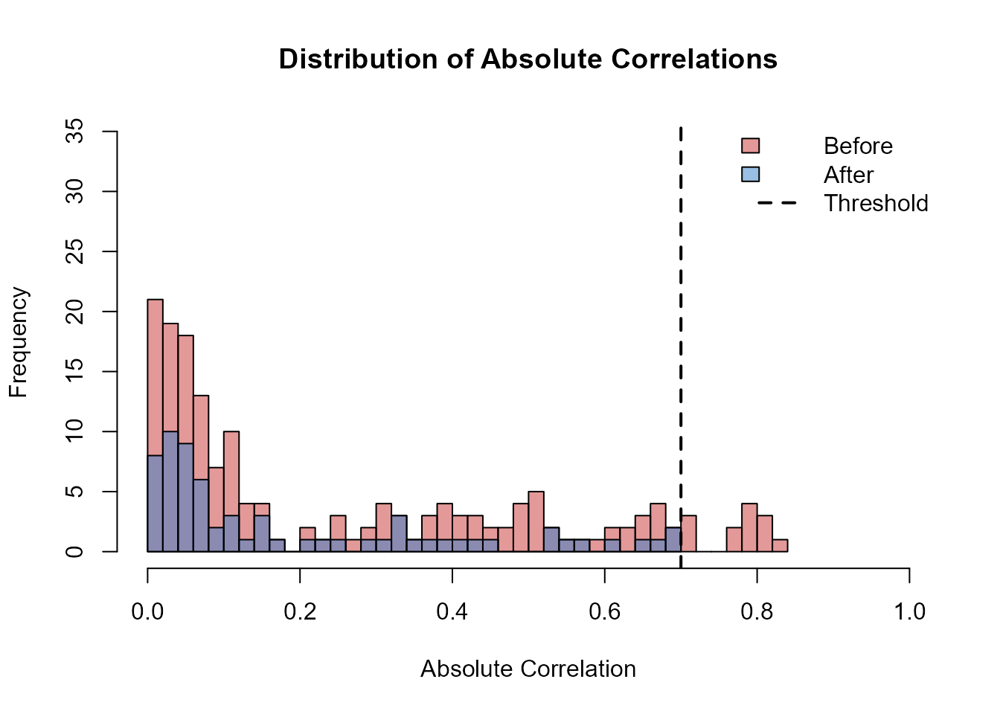
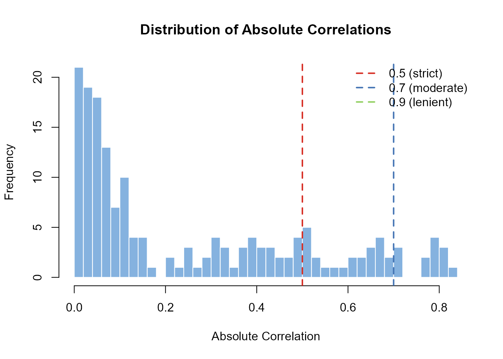
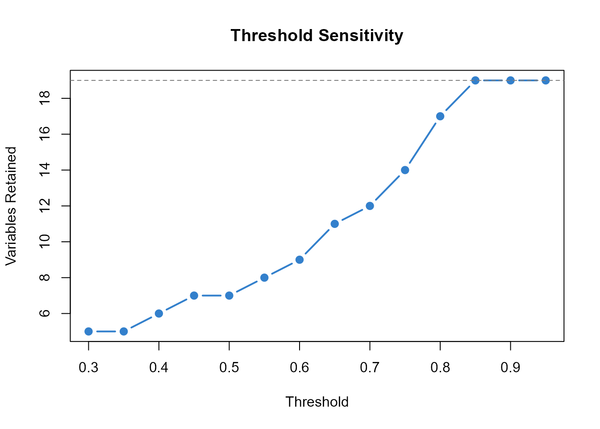

What corrselect Does
corrselect identifies and removes redundant variables based on
pairwise correlation or association. Given a threshold
,
it finds subsets where all pairwise associations satisfy
(see vignette("theory") for mathematical formulation).
Interface Hierarchy
corrselect provides three levels of interface:
Level 1: Simple Pruning
corrPrune() - Removes redundant predictors based on pairwise correlation:
- Returns a single pruned dataset
- No response variable required
- Fast greedy or exact search
modelPrune() - Reduces VIF in regression models:
- Returns a single pruned dataset with response
- Iteratively removes high-VIF predictors
- Works with lm, glm, lme4, glmmTMB
Level 2: Structured Subset Selection
corrSelect() - Returns all maximal subsets (numeric data):
- Enumerates all maximal valid subsets satisfying threshold (see
vignette("theory")) - Provides full metadata (size, avg_corr, max_corr, min_corr)
- Exact or greedy search
assocSelect() - Returns all maximal subsets (mixed-type data):
- Handles numeric, factor, and ordered variables
- Uses appropriate association measures per variable pair
- Exact or greedy search
Pruning Example: corrPrune()
library(corrselect)
data(bioclim_example)
# Remove correlated predictors (threshold = 0.7)
pruned <- corrPrune(
data = bioclim_example[, -1], # Exclude response
threshold = 0.7
)
# Variables retained
ncol(pruned)
#> [1] 12
head(names(pruned))
#> [1] "BIO1" "BIO3" "BIO6" "BIO9" "BIO11" "BIO12"Variables removed:
attr(pruned, "removed_vars")
#> [1] "BIO2" "BIO4" "BIO5" "BIO7" "BIO8" "BIO10" "BIO15"How corrPrune() selects among multiple maximal subsets:
When multiple maximal subsets exist (which is common),
corrPrune() returns the subset with the lowest
average absolute correlation. This selection criterion balances
three goals:
- Minimize redundancy: Lower average correlation means more independent variables
- Maximize information: Prefers diverse variable combinations over tightly clustered ones
- Deterministic behavior: Always returns the same result for the same data
Example:
# If two maximal subsets exist:
# Subset A: {bio1, bio4, bio12} with avg_corr = 0.35
# Subset B: {bio2, bio5, bio15} with avg_corr = 0.42
# corrPrune() returns Subset A (lower average correlation)To explore all maximal subsets instead of just the
optimal one, use corrSelect() (see below).
Visualization:
cor_before <- cor(bioclim_example[, -1])
cor_after <- cor(pruned)
hist(abs(cor_before[upper.tri(cor_before)]),
breaks = 30,
main = "Distribution of Absolute Correlations",
xlab = "Absolute Correlation",
col = rgb(0.8, 0.2, 0.2, 0.5),
xlim = c(0, 1),
ylim = c(0, max(table(cut(abs(cor_before[upper.tri(cor_before)]), breaks = 30))) * 1.2))
hist(abs(cor_after[upper.tri(cor_after)]),
breaks = 30,
col = rgb(0.2, 0.5, 0.8, 0.5),
add = TRUE)
abline(v = 0.7, col = "black", lwd = 2, lty = 2)
legend("topright",
legend = c("Before", "After", "Threshold"),
fill = c(rgb(0.8, 0.2, 0.2, 0.5), rgb(0.2, 0.5, 0.8, 0.5), NA),
border = c("black", "black", NA),
lty = c(NA, NA, 2),
lwd = c(NA, NA, 2),
bty = "n")
Model-Based Pruning: modelPrune()
# Prune based on VIF (limit = 5)
model_data <- modelPrune(
formula = species_richness ~ .,
data = bioclim_example,
limit = 5
)
# Predictors retained
length(attr(model_data, "selected_vars"))
#> [1] 16Variables removed:
attr(model_data, "removed_vars")
#> [1] "BIO2" "BIO7" "BIO5"Final model:
final_model <- attr(model_data, "final_model")
summary(final_model)$coefficients[1:5, ] # First 5 coefficients
#> Estimate Std. Error t value Pr(>|t|)
#> (Intercept) -255.6180854 37.1881215 -6.8736488 1.075474e-09
#> BIO1 0.6123452 0.1356203 4.5151441 2.071774e-05
#> BIO3 -0.0912390 0.1823538 -0.5003405 6.181594e-01
#> BIO4 -0.1464343 0.1909057 -0.7670503 4.452280e-01
#> BIO6 0.1896414 0.1620747 1.1700869 2.453149e-01VIF comparison:
# Increase bottom margin for rotated axis labels
par(mar = c(8, 4, 4, 2))
full_model <- lm(species_richness ~ ., data = bioclim_example)
X_full <- model.matrix(full_model)[, -1]
vif_before <- sapply(colnames(X_full), function(var) {
1 / (1 - summary(lm(X_full[, var] ~ X_full[, -which(colnames(X_full) == var)]))$r.squared)
})
X_pruned <- model.matrix(final_model)[, -1]
vif_after <- sapply(colnames(X_pruned), function(var) {
1 / (1 - summary(lm(X_pruned[, var] ~ X_pruned[, -which(colnames(X_pruned) == var)]))$r.squared)
})
all_vars <- unique(c(names(vif_before), names(vif_after)))
vif_combined <- data.frame(
before = vif_before[match(all_vars, names(vif_before))],
after = vif_after[match(all_vars, names(vif_after))]
)
vif_combined[is.na(vif_combined)] <- 0
vif_combined <- vif_combined[order(vif_combined$before, decreasing = TRUE), ]
n_show <- min(15, nrow(vif_combined))
barplot(
t(as.matrix(vif_combined[1:n_show, ])),
beside = TRUE,
las = 2,
main = "VIF Before and After modelPrune()",
ylab = "VIF",
col = c(
rgb(0.8, 0.2, 0.2, 0.7),
rgb(0.2, 0.5, 0.8, 0.7)
),
cex.names = 0.6,
names.arg = rownames(vif_combined)[1:n_show]
)
abline(h = 5, col = "black", lwd = 2, lty = 2)
legend("topright",
legend = c("Before", "After", "Limit"),
fill = c(
rgb(0.8, 0.2, 0.2, 0.7),
rgb(0.2, 0.5, 0.8, 0.7),
NA
),
border = c("black", "black", NA),
lty = c(NA, NA, 2),
lwd = c(NA, NA, 2),
bty = "o", # opaque box
bg = "white" # hides dashed line behind legend
)
Subset Selection: corrSelect()
corrSelect() returns all maximal subsets, not just one:
results <- corrSelect(bioclim_example[, -1], threshold = 0.7)
show(results)
#> CorrCombo object
#> -----------------
#> Method: bron-kerbosch
#> Correlation: pearson
#> Threshold: 0.700
#> Subsets: 42 valid combinations
#> Data Rows: 100 used in correlation
#> Pivot: TRUE
#>
#> Top combinations:
#> No. Variables Avg Max Size
#> ------------------------------------------------------------
#> [ 1] BIO1, BIO3, BIO6, BIO9, BIO11... 0.192 0.689 12
#> [ 2] BIO1, BIO3, BIO5, BIO9, BIO11... 0.195 0.689 12
#> [ 3] BIO1, BIO3, BIO6, BIO8, BIO11... 0.195 0.689 12
#> [ 4] BIO1, BIO4, BIO6, BIO9, BIO11... 0.196 0.689 12
#> [ 5] BIO1, BIO3, BIO6, BIO9, BIO11... 0.196 0.688 12
#> ... (37 more combinations)Inspect subsets:
as.data.frame(results)[1:5, ] # First 5 subsets
#> VarName01 VarName02 VarName03 VarName04 VarName05
#> Subset01 [avg=0.192] BIO1 BIO3 BIO6 BIO9 BIO11
#> Subset02 [avg=0.195] BIO1 BIO3 BIO5 BIO9 BIO11
#> Subset03 [avg=0.195] BIO1 BIO3 BIO6 BIO8 BIO11
#> Subset04 [avg=0.196] BIO1 BIO4 BIO6 BIO9 BIO11
#> Subset05 [avg=0.196] BIO1 BIO3 BIO6 BIO9 BIO11
#> VarName06 VarName07 VarName08 VarName09 VarName10
#> Subset01 [avg=0.192] BIO12 BIO13 BIO14 BIO16 BIO17
#> Subset02 [avg=0.195] BIO12 BIO13 BIO14 BIO16 BIO17
#> Subset03 [avg=0.195] BIO12 BIO13 BIO14 BIO16 BIO17
#> Subset04 [avg=0.196] BIO12 BIO13 BIO14 BIO16 BIO17
#> Subset05 [avg=0.196] BIO12 BIO13 BIO15 BIO16 BIO17
#> VarName11 VarName12
#> Subset01 [avg=0.192] BIO18 BIO19
#> Subset02 [avg=0.195] BIO18 BIO19
#> Subset03 [avg=0.195] BIO18 BIO19
#> Subset04 [avg=0.196] BIO18 BIO19
#> Subset05 [avg=0.196] BIO18 BIO19Extract a specific subset:
subset_data <- corrSubset(results, bioclim_example[, -1], which = 1)
head(names(subset_data))
#> [1] "BIO1" "BIO3" "BIO6" "BIO9" "BIO11" "BIO12"Mixed-Type Data: assocSelect()
data(survey_example)
# Exclude ID and response
survey_predictors <- survey_example[, !(names(survey_example) %in%
c("respondent_id", "overall_satisfaction"))]
# Handle mixed types
results_mixed <- assocSelect(survey_predictors, threshold = 0.6)
show(results_mixed)
#> CorrCombo object
#> -----------------
#> Method: bron-kerbosch
#> Correlation: mixed
#> AssocMethod: numeric_factor = eta, numeric_ordered = spearman, factor_ordered
#> = cramersv, ordered_ordered = spearman
#> Threshold: 0.600
#> Subsets: 900 valid combinations
#> Data Rows: 200 used in correlation
#> Pivot: TRUE
#>
#> Top combinations:
#> No. Variables Avg Max Size
#> ------------------------------------------------------------
#> [ 1] age, gender, education, satis... 0.175 0.555 6
#> [ 2] age, gender, education, satis... 0.175 0.555 6
#> [ 3] age, gender, education, satis... 0.176 0.555 6
#> [ 4] age, gender, education, satis... 0.176 0.563 6
#> [ 5] age, gender, education, satis... 0.176 0.591 6
#> ... (895 more combinations)Protecting Variables
# Check available variable names
head(names(bioclim_example[, -1]))
#> [1] "BIO1" "BIO2" "BIO3" "BIO4" "BIO5" "BIO6"
# Force a variable to remain in all subsets
first_var <- names(bioclim_example)[2] # First predictor
pruned_force <- corrPrune(
data = bioclim_example[, -1],
threshold = 0.7,
force_in = first_var
)
# Verify forced variable is present
first_var %in% names(pruned_force)
#> [1] TRUEThreshold Selection
Visualize correlation distribution:
cor_mat <- cor(bioclim_example[, -1])
cor_vec <- cor_mat[upper.tri(cor_mat)]
# Histogram with fixed x-limits so the 0.9 line is always in view
hist(abs(cor_vec), breaks = 30,
main = "Distribution of Absolute Correlations",
xlab = "Absolute Correlation",
col = rgb(0.2, 0.5, 0.8, 0.6),
border = "white",
xlim = c(0, 1))
# Threshold lines (all visible because of xlim)
abline(v = c(0.5, 0.7, 0.9),
col = c("#d73027", "#4575b4", "#91cf60"),
lwd = 2, lty = 2)
# Legend with opaque background so dashed lines don't pass through
legend("topright",
legend = c("0.5 (strict)", "0.7 (moderate)", "0.9 (lenient)"),
col = c("#d73027", "#4575b4", "#91cf60"),
lwd = 2, lty = 2,
bty = "o", # draw a box
bg = "white") # solid white background so lines stay hidden
Test multiple thresholds:
thresholds <- seq(0.3, 0.95, by = 0.05)
sizes <- sapply(thresholds, function(t) {
tryCatch(ncol(corrPrune(bioclim_example[, -1], threshold = t)), error = function(e) NA)
})
plot(thresholds, sizes, type = "b",
xlab = "Threshold",
ylab = "Variables Retained",
main = "Threshold Sensitivity",
col = rgb(0.2, 0.5, 0.8), lwd = 2, pch = 19)
abline(h = ncol(bioclim_example) - 1, lty = 2, col = "gray50")
Interface Selection
corrPrune() and modelPrune():
- Single pruned dataset
- Fast execution
- Preprocessing pipelines
corrSelect() and assocSelect():
- All maximal subsets
- Full metadata per subset
- Documented enumeration for reproducible research
MatSelect():
- Precomputed matrices
- Repeated analyses with different thresholds
See Also
-
vignette("workflows")- Complete workflows across domains -
vignette("advanced")- Algorithmic control and custom engines -
vignette("comparison")- Comparison with caret, Boruta, glmnet -
vignette("theory")- Theoretical foundations and formulation -
?corrPrune,?modelPrune,?corrSelect,?assocSelect,?MatSelect